garrick / down / 4-step LoRA (fast) / 640 px, 49 frames / seed 11 / 122.4 s
HALF TURN, first frame = front view, last frame = back view (old Qwen turnaround cells). Wan only fills in the turn; the middle is the side view. Prompt asked to turn left - it did.
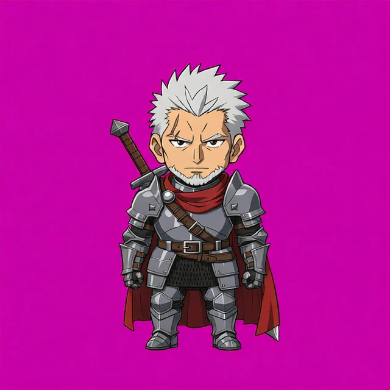
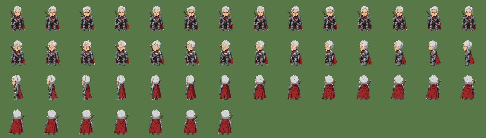
garrick / down / 4-step LoRA (fast) / 640 px, 49 frames / seed 11 / 187.2 s
Same, but the prompt asked to turn RIGHT: it turned left again. The turn direction cannot be steered by wording.
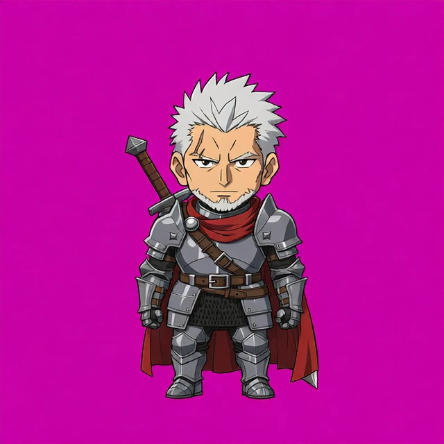
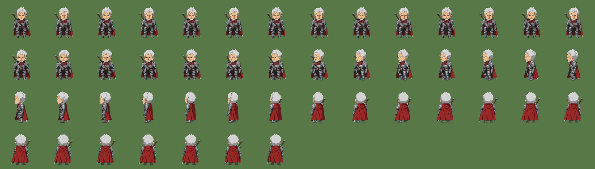
garrick / left / 4-step LoRA (fast) / 640 px, 81 frames / seed 11 / 504.6 s / gait cycle 17 frames from frame 18
Armour and cape stay stable through the whole clip. No sword, because the start frame (side view from the Qwen turnaround) has none - the video keeps what the first frame shows, nothing more.
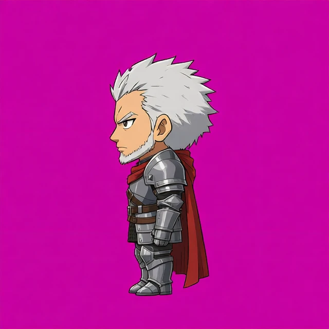
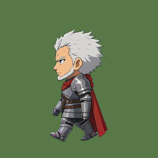
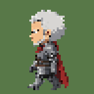
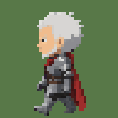
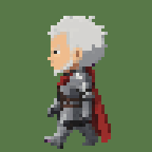
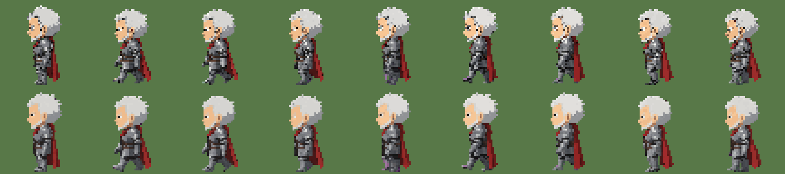
garrick / down / 4-step LoRA (fast) / 640 px, 81 frames / seed 11 / 759.7 s
Turntable from the front view only (full 360 degrees). The sword stays on the back through the whole turn - but the back is invented (odd scabbard block).
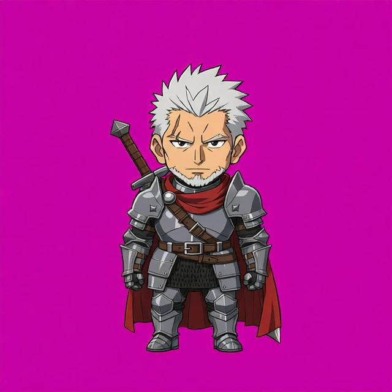
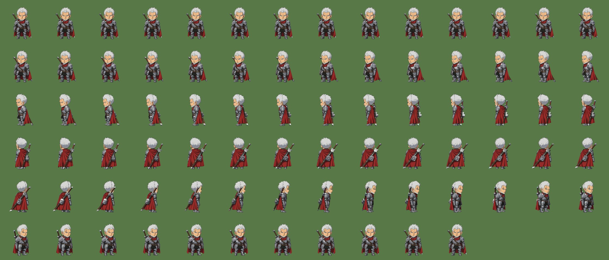
garrick / down / 4-step LoRA (fast), first frame = last frame / 640 px, 81 frames / seed 11 / 170.4 s
Turntable pinned to the front view at both ends. Clean turn, but the invented back now has a satchel next to the sword. Conclusion: the back view must be given, not invented.
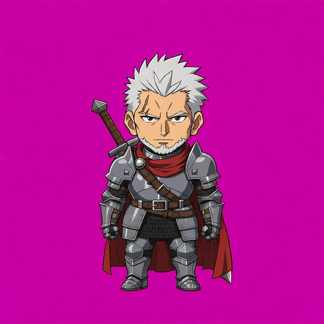
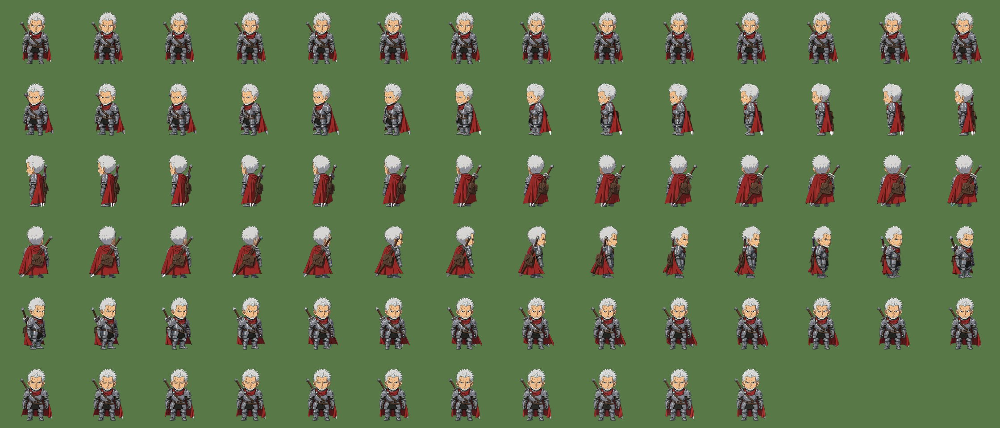
rin / down / 4-step LoRA (fast) / 640 px, 81 frames / seed 11 / 139.3 s / gait cycle 16 frames from frame 10
Front view: legs alternate properly (the two half-cycles differ, ratio 3.4). The face is redrawn a little compared with the standing frame.
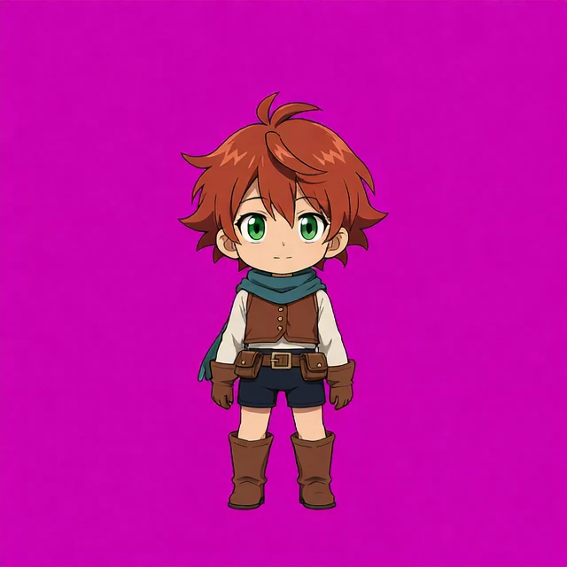
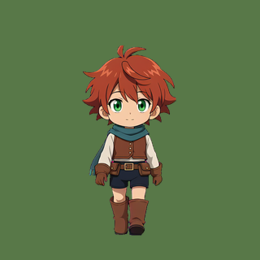
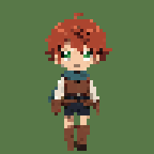
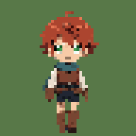
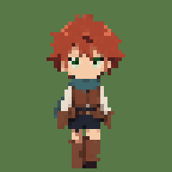
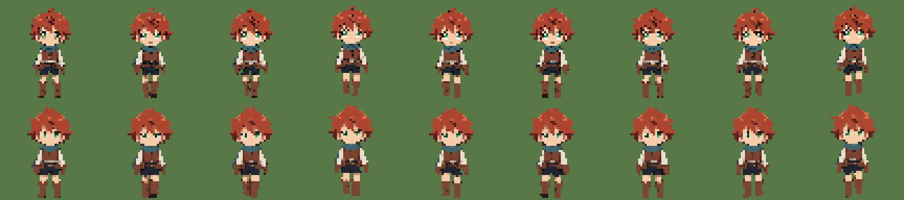
rin / down / full quality, 20 steps / 640 px, 49 frames / seed 11 / 760.4 s / gait cycle 17 frames from frame 18
NEGATIVE RESULT: 20 steps with CFG 3.5, 49 frames. The motion is livelier but irregular - more a hop than a walk, and the expression changes (mouth opens). No clean cycle. The 4-step clips are steadier and loop better.
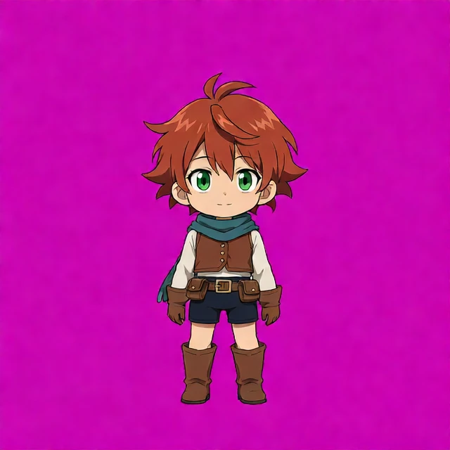
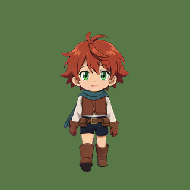
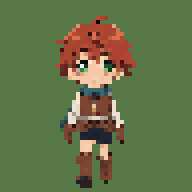
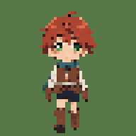
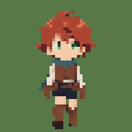
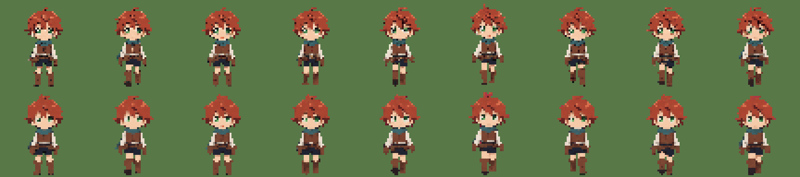
rin / left / 4-step LoRA (fast) / 640 px, 81 frames / seed 11 / 130.2 s / gait cycle 16 frames from frame 28
First test. Real walk cycle with arm swing and scarf motion; 16-frame gait cycle found automatically. Slight colour bleed of the background into the boots in late frames.
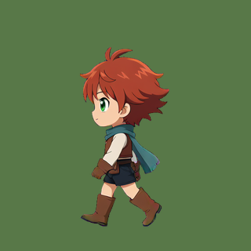
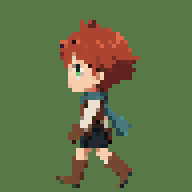
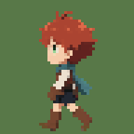
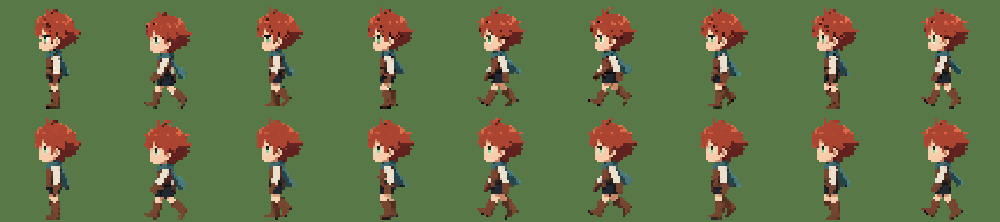
rin / left / full quality, 20 steps / 640 px, 81 frames / seed 11 / 766.8 s / gait cycle 16 frames from frame 12
Same start frame at full quality. Starts walking sooner, the loop closes more cleanly (jump 0.011 vs 0.018). Colours drift after frame 60 (brighter background, reddish boots) - the cycle is therefore taken as early as possible.
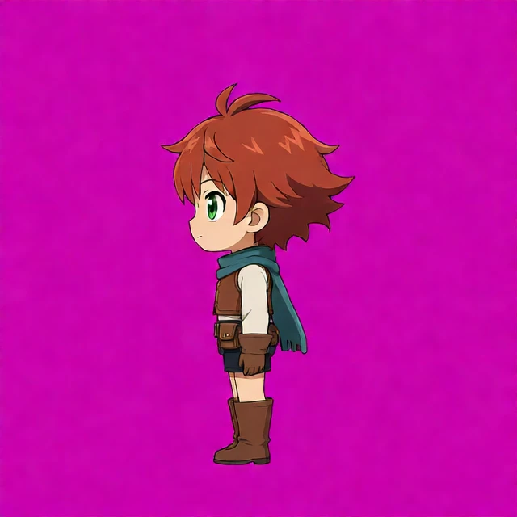
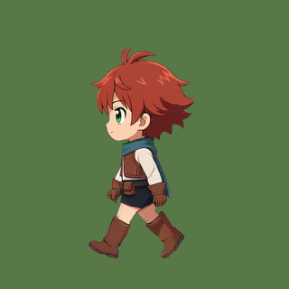
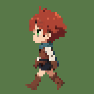
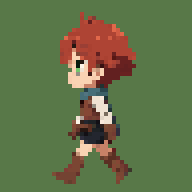
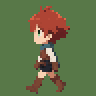
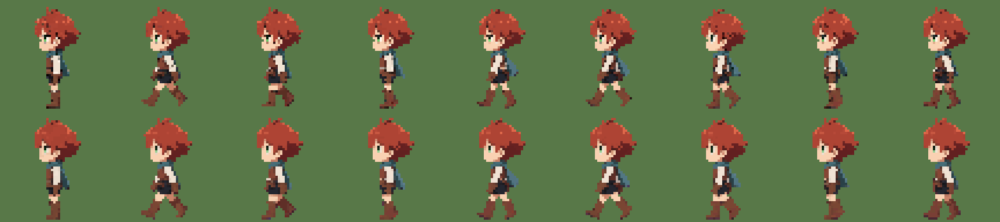
rin / down / 4-step LoRA (fast), first frame = last frame / 640 px, 81 frames / seed 11 / 181.9 s
Same for Rin.
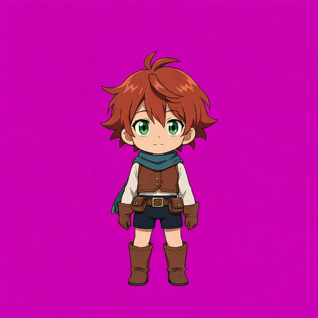
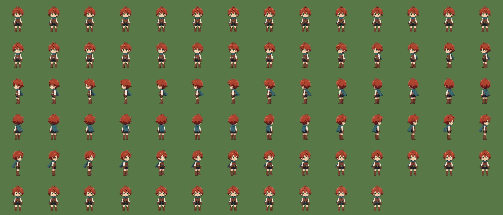
rin / up / 4-step LoRA (fast) / 640 px, 81 frames / seed 11 / 1010.2 s / gait cycle 22 frames from frame 33
Prompt said 'walking away from the viewer' and the model did exactly that - the character shrinks to 87 %. Zoom compensation (resize every frame until the head is as wide as in the standing frame) repairs it.
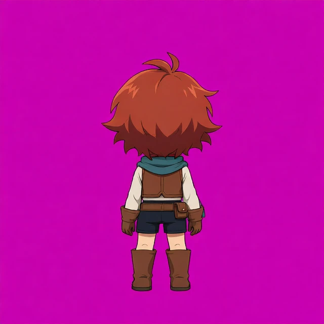
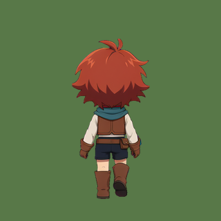
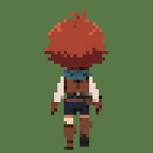
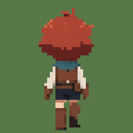
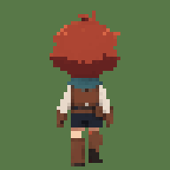
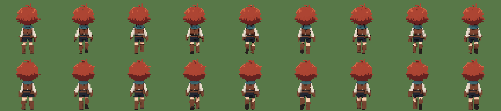
rin / up / 4-step LoRA (fast) / 640 px, 81 frames / seed 11 / 607.6 s / gait cycle 24 frames from frame 30
Reworded to 'marching on the spot without moving away': still recedes to 90 %, a strong habit of the model for back views. With zoom compensation the loop closes cleanly (jump 0.012) and the legs alternate.
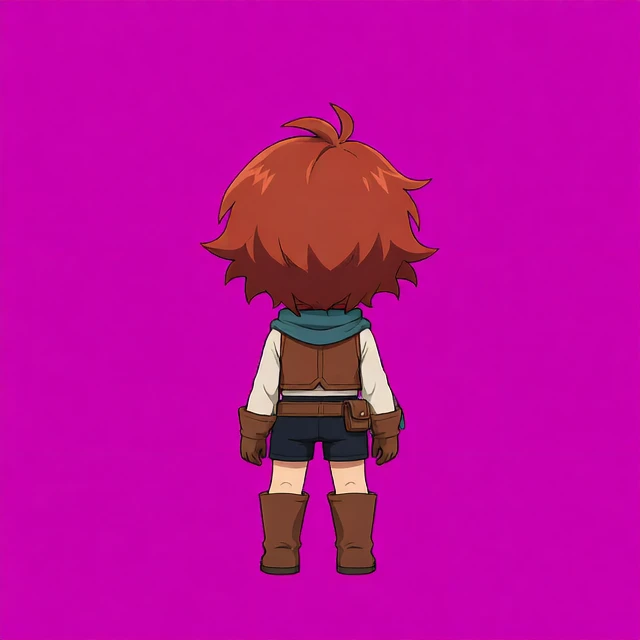
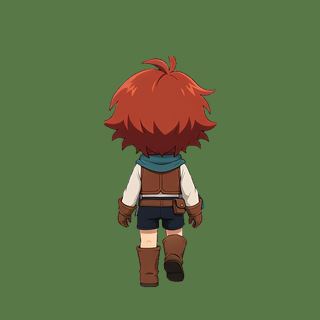
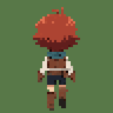
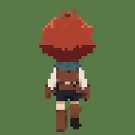
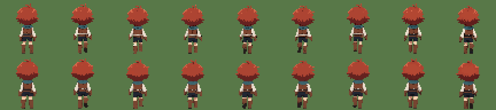
rin / up / 4-step LoRA (fast), first frame = last frame / 640 px, 81 frames / seed 11 / 619.8 s / gait cycle 16 frames from frame 13
BEST BACK VIEW: the standing frame is given as first AND last frame. Pinned at both ends the character cannot walk off: no zoom (0.996-1.004), the head stays identical (error 0.010), clean 16-frame cycle. This becomes the default for all directions.
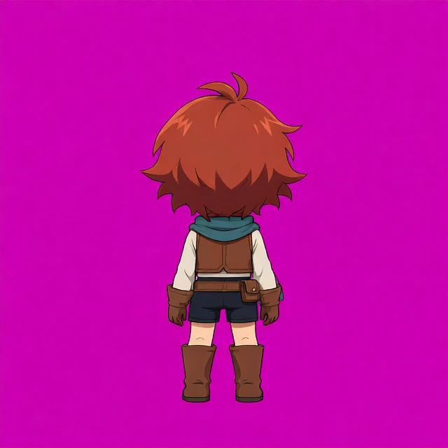
rin / up / 4-step LoRA (fast) / 640 px, 81 frames / seed 11 / 233.3 s / gait cycle 23 frames from frame 20
Wording 'the camera follows behind at a constant distance': worse, the character shrinks to 79 %. Wording does not stop the receding; pinning the last frame does.
selka / down / 4-step LoRA (fast) / 640 px, 81 frames / seed 11 / 260.3 s / gait cycle 16 frames from frame 18
The staff stays in the same hand in all 81 frames and the hat keeps its shape - this is the prop defect of the frame-by-frame approach, gone. The walk itself is subtle because the robe hides most of the legs.
selka / down / 4-step LoRA (fast) / 640 px, 49 frames / seed 11 / 255.6 s
Half turn for Selka: staff handled correctly (hidden behind the body when the holding hand is on the far side).
selka / down / 4-step LoRA (fast), first frame = last frame / 640 px, 81 frames / seed 11 / 185.4 s
Same for Selka: the staff changes sides correctly in 3D, the invented back is plausible but not controlled.